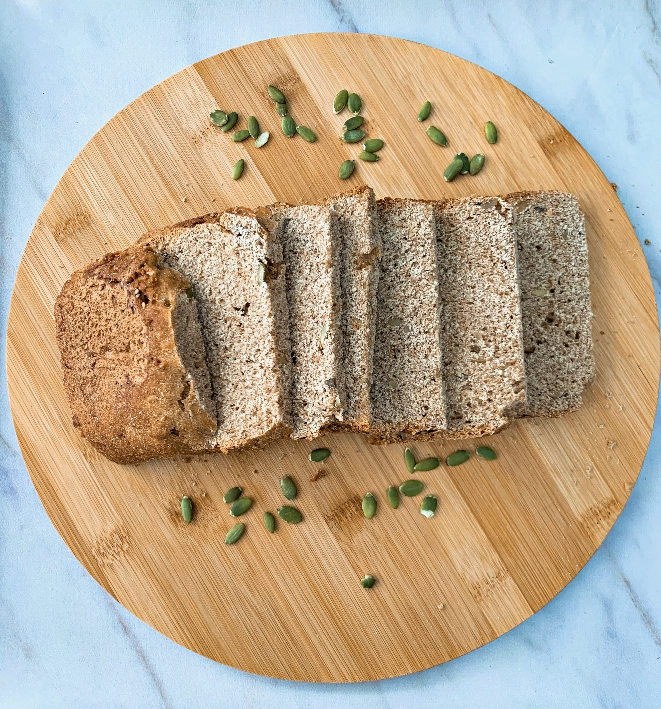

Panqueques

Ingredientes:
- 2 huevos (o sustituto)
- 1 banana mediana
- 1 y 1/2 taza de avena instantánea
- 1/2 taza de leche a elección
- Extracto de vainilla
- Polvo de hornear
Pasos:
- Mezclar o licuar todos los ingredientes.
- Calentar una sartén antiadherente e ir volcando la preparación de a poco.
- Cocinar vuelta y vuelta y servir.
Son ideales para acompañar con fruta y pasta de maní.
Pan Integral
Ingredientes:
- 250 g de harina integral
- 250 g de harina 000
- 250 ml de agua tibia
- 1 cda de azúcar
- 50 ml de aceite de oliva
- Sal a gusto
Pasos:
Para el fermento:
- Diluir la levadura en polvo en 100 ml de agua tibia y 1 cda de azúcar.
- Integrar y dejar tapado hasta que se forma una espuma o burbujas
Para la masa:
- Mezclar las harinas y formar una corona.
- Agregar la sal por fuera sin que toque la levadura y agregar en el centro el resto del agua tibia, aceite y fermento.
- Formar una masa y amasar por 10 minutos. Dejar descansar en un bowl tapado hasta que duplique su volumen.
- Desgasificar la masa y estirar formando un rectángulo. Enrrollar y colocar en un molde. Dejar descansar nuevamente hasta que duplique volumen
- Cocinar en horno a 180 grados por 35-40 min aprox.